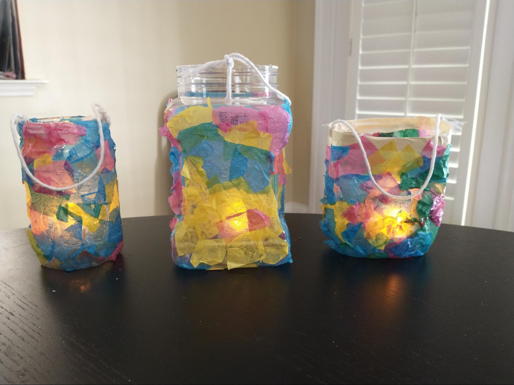
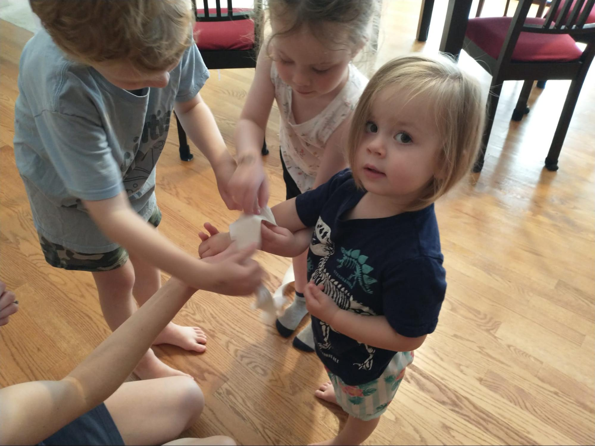
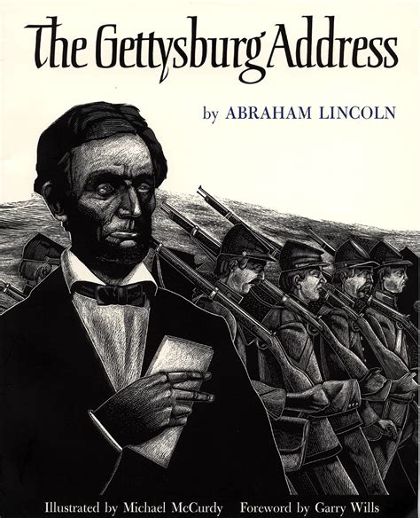

Clara Barton’s story epitomizes core American values. She saw a great need to tend the wounded on the battlefield, organized her own supplies and team, and then proceeded to earn her nickname, “The Angel of the Battlefield.” After the Civil War ended she established the Missing Soldiers Office to help families locate soldiers who had not returned from the war. Her final act of voluntary service to our nation was founding the American Red Cross, where she served as president for 24 years. She was one of the great social entrepreneurs of the 19th century, one of the best illustrations of Alexis de Tocqueville’s “voluntary associations.”
Her entrepreneurial drive was fueled by a remarkable work ethic. She was fearless and indefatigable in her battlefield work during the Civil War, mobilizing supplies and her team to assist at battlefield after battlefield. She continued her work aiding soldiers for four years after the war by writing tens of thousands of letters to their families. And then she spent almost ten years persistently advocating for the founding of the American Red Cross before succeeding in 1881. At the age of 76 this remarkable woman served as a volunteer in Cuba during the Spanish American War. She didn’t retire as president of the Red Cross until 1904, at the age of 82.
Our story finds Clara Barton at the Battle of Antietam – not only the worst single day battle of the Civil War for American casualties but the worst single day battle in American history. While Clara Barton brought the light of hope onto the battlefield, Abraham Lincoln used Antietam as the opportunity he’d been waiting for to announce the Emancipation Proclamation, setting America on the path to abolishing slavery and living up to our ideal that “all men are created equal.”

Title: To the Front! Clara Barton Braves the Battle of Antietam
Author: Claudia Friddell
Illustrator: Christopher Cyr
Year Published: 2022
Length: 40 pages
Below is one suggestion for your week with the book To The Front!. Please experiment with what works for your family! (Note: not all activities are included in the suggested sample week below).
toc: "American Heritage Songbook: _Battle Hymn of the Republic_"
time: 5 minutes
freq: daily
Mine eyes have seen the glory of the coming of the Lord; He is trampling out the vintage where the grapes of wrath are stored; He hath loosed the fateful lightning of His terrible swift sword:
His truth is marching on. Glory, glory, hallelujah! Glory, glory, hallelujah! Glory, glory, hallelujah! His truth is marching on.
The abolitionist Julia Ward Howe wrote the powerful and stirring words to this song for the soldiers of the Union Army. It is likely that Union soldiers sang it at the battle of Antietam as it was published six months before the battle took place.
Howe does not explicitly call out either the Union or the Confederacy in her song, which undoubtedly contributes to it becoming a timeless patriotic song. However, she makes it abundantly clear which side she is on in the final verse. Here is where she connects Jesus’s sacrifice on the cross for our sins to the need for people to sacrifice themselves to “make men free.”
As He died to make men holy, let us live* to make men free, While God is marching on.
There are many good versions of the Battle Hymn of the Republic available on YouTube, some with lyrics and some without. The lyrics can be a bit challenging for younger singers because of the vocabulary, so you may want to focus on just the first and last verses. Or possibly even simpler, just have them learn the chorus.
* Originally, the lyric was “die” but most contemporary versions use “live.”
time: 15 minutes
prep: 10-15 minutes
supplies: plastic bottle, modge podge, tissue paper, paint brushes, tea candles, string or, pipe cleaners
Clara knows from darkness - with lanterns there is light. Clara believes from prayer - with light there is hope.
Note that glass bottles would also work. I stayed away from glass bottles and real candles to make it a little safer to hand off to my kids. We had a plastic bottle that had a very narrow opening so I cut across the bottle at a wider point and then covered the sharp plastic edge with masking tape. We bought battery operated tea lights from Dollar Tree.
I was somewhat surprised at how accessible this craft ended up being. My two-year-old applied some modge podge (with my guidance) and started applying tissue paper. My older two kids were able to do much of the modge podge/tissue paper portion without a ton of help.
See some variations here:

Three lanterns
time: 10 minutes
supplies: U.S. puzzle
On the evening of the 16th of September we reached the valley of Antietam.
Abraham Lincoln’s Emancipation Proclamation was an executive order made in war time that freed all the slaves in Confederate States still in a state of rebellion (Tennessee, one of the original slave states to rebel, was already under Union control at the time Lincoln issued the Emancipation Proclamation; it abolished slavery in October, 1864). Most Northern States had already abolished slavery.
However, after the Emancipation Proclamation there were still five states where slavery was legal: Delaware, West Virginia, Kentucky, Missouri, and Maryland (where the valley of Antietam was located). These states are known as the Border States. Three of them abolished slavery before the Civil War ended: Maryland (November, 1864), Missouri (January, 1865), West Virginia (February, 1865). The remaining two, Delaware and Kentucky did not eliminate slavery until forced to by ratification of the 13th Amendment on December 18, 1865 (oddly, we do not celebrate December 18th as a holiday).
For this activity, ask your kid(s) to assemble a jigsaw puzzle of the United States in three parts:
You can also do this activity by using a coloring sheet of the United States and asking your kids to use different colors for each of the three categories above.
Then, ask your kid(s): why do we call those five states the Border States?
time: 5 minutes
freq: daily
…that this nation, under God, shall have a new birth of freedom – and that government of the people, by the people, for the people, shall not perish from this earth.
While the Battle of Antietam marked the moral turning point in the Civil War, the Battle of Gettysburg, less than a year later, was decisively won by Union forces and was the beginning of the end for Confederate forces. The battle lasted three days, July 1-3, with enormous casualties on both sides. But it halted the Confederate invasion of the North and forced them to retreat back to the South.
Four and a half months later, on November 19, 1863, at the dedication of the Soldiers’ National Cemetery at Gettysburg, President Lincoln delivered the most famous speech in American history. In just ten powerfully eloquent sentences he reminded us of the sacrifice of the men willing to die so that their country might live and that a country “conceived in Liberty, and dedicated to the proposition that all men are created equal” was worth dying for.
Consider having your children memorize either the fragment of the Gettysburg Address excerpted above or the very first sentence included in the Supplemental Reading activity below.
time: 5 minutes
freq: daily
I do order and declare that all persons held as slaves within said designated States, and parts of States, are, and henceforward shall be free … And upon this act, sincerely believed to be an act of justice, warranted by the Constitution, upon military necessity, I invoke the considerate judgment of mankind, and the gracious favor of Almighty God… - Abraham Lincoln
The Battle of Antietam marked a turning point in the Civil War. While it was not a decisive victory for the Union forces, it was enough of a victory for Abraham Lincoln to issue the Emancipation Proclamation five days later, on September 22. Lincoln had prepared his proclamation earlier but had withheld it until a Union victory because he did not want it to appear that the Union was only issuing it because they were losing.
Lincoln’s proclamation helped turn the Civil War into a moral crusade against slavery. Britain and France, the two most powerful European countries, had been on the verge of recognizing the Confederacy as a separate country. Both countries had already outlawed slavery; the Emancipation Proclamation ensured they would not side with the Confederacy as neither wanted to be perceived as supporting the institution of slavery.
Practice reciting the first sentence, marked in bold above, with your kid(s) until they have it memorized.
time: 20 minutes
prep: 10-15 minutes
“It’s a curious thing that happens when Clara feels Indian meal, not sawdust, packed around bottles. It’s a curious thing that happens when Clara finds salt and more meal stashed in the cellar. … Six large kettles were picked up and set over fires almost as quickly as I can tell it and I was mixing meal and water for gruel. We made gruel, gruel, gruel.“
I modified the following recipe:
I had trouble getting my gruel to be thick enough initially (it was basically grainy hot water). I added additional cornmeal and water mixture (resulting in my adapted recipe above). It also thickened by waiting longer after it was removed from the heat. The flavor was very bland. My impression is that it likely provided soothing, some hydration, and small amounts of salt and calories to the sick and wounded. I found the optional ingredients important for flavor. Not the most delicious meal, but helpful in making the story more tangible. Perhaps try the bland version and then add the optional items for a slightly yummier experience.
Other recipes that I came across:
time: 10 minutes
“What are these cornhusks?” They are bandages.
Today we use small sticky bandages for minor cuts (rather than cornhusks or other materials). Are some bandages better than others? Let’s experiment to find out! Below we outline how you can test which type of bandage has the best adhesion by measuring how much weight they can hold before pulling off. However, there are many different kinds of experiments you can do with bandages (e.g. which is stickiest after getting wet, which surface is best for a bandage to stick to, etc.). Feel free to design and implement your own experiment.
This is a great opportunity to discuss the scientific method. Ask your child(ren) for a hypothesis about what type of bandage they think will hold the most weight. Talk to your child(ren) about how to set up a test, holding constant everything except for the one thing that is being tested, and the importance of setting up a testing protocol. Discuss what you learned from the results and ask how they might apply this information in the future. Would a certain type of bandage be better or worse for certain types/locations of cuts?
toc: "Re-enactment: Light in the Dark"
time: 10-15 minutes
supplies: Lanterns or flashlights or candles
When I came back from the barn I went into the house where I saw a solitary light burning. The surgeon was sitting in one of those dark, dank rooms with two inches of candle by him, and his head on his hand, the picture of despair. … I took him to the door, and told him to look towards the barn; it was like a garden illumination with chinese lanterns.
“What are they?” said he in amazement. “Lanterns,” said I. “Lanterns! Where did they come from?” “I brought them. The men will be here in a few moments to light the house. You will have plenty of light, and plenty of assistance. Don’t despair in your good work, doctor.”
At night when it is dark, take your children into a room and turn off all the lights. Ask them how they feel. Then light one candle or lantern or turn on one flashlight. Ask them how they feel again and how things have changed. Then light several more candles or lanterns and see how the room and how people feel changes.
We used the lanterns that we had made for this activity (and a couple of cell phone flashlights, but I think candles would be better). Standing in the dark, my children both said that they felt afraid. Interestingly enough, my husband walked in as we started this activity and immediately turned on his cell phone flashlight offering a great example of how he didn’t want to be in the dark either. As we lit some more lanterns, the children loosened up and felt more comfortable. After we had discussed the experience, my daughter decided to play the game of trying to walk all around the room only by the light of her lantern (and given the number of toys lying on the floor was actually somewhat challenging).
toc: "Re-enactment: Make Your Own First-Aid Kit"
time: 30-40 minutes
prep: 30-60 minutes
supplies: Zip-lock bags, sharpies, Band-Aids, surgical tape, gauze, wipes, hand sanitizer, chewable Tylenol, Q-Tips, cotton balls
Clara’s hands, like tools, dig deep to mend the broken. Clara’s hands, like prayers, hold hope to soothe the suffering.
Discuss what first aid is. Perhaps go through a first aid kit to get a sense of what they typically include and how to use those items. We pulled out the first aid kit that lives in our car and walked through each item and how it might be used in an emergency setting. Another option is to watch a short video that walks through a first aid kit such as: FIRST AID basics.
While going through the items, you can cover some basic first aid steps such as:
Next, take turns being Clara Barton and a wounded soldier. We applied some ketchup to the wounded soldier’s arm to represent a bleeding wound. “Clara Barton” then took a folded paper towel (representing a bandage or gauze) and applied pressure to the wound. Next “Clara” took an elastic/cloth bandage and wound it around the “wound” to hold the paper towel in place.
Finally, we made our own First Aid kits that the kids can take with them when they are at a friend’s house or attend classes away from home.
Many of the items for the First Aid kit you may already have on hand (bandages, wipes, etc.). We purchased most of our supplies from the Dollar Tree, but most grocery stores or pharmacies should also work. Making the kits can work for a wide age range depending on what you include in them (my two-year-old proudly carried her First Aid kit around the rest of the day). This was a nice opportunity to go over some basics on how to handle common injuries that might occur on the playground.

Bandaging a wounded soldier
time: 10 minutes
Four score and seven years ago our fathers brought forth on this continent, a new nation, conceived in Liberty, and dedicated to the proposition that all men are created equal.

Title: The Gettysburg Address
Author: Abraham Lincoln
Illustrator: Michael McCurdy
Year Published: 1995
Length: 32 pages
There are multiple illustrated versions of Lincoln’s Gettysburg Address but all share one thing in common (other than the text): they are not as readily available at libraries or bookstores as the books we normally recommend. Michael McCurdy illustrates this version in stark black and white, each drawing (other than the first) a double-page spread; twelve drawings for ten sentences.
time: 10 minutes
Send forth your light and your truth, let them guide me.
The surgeon in the story needed both the physical light from Clara Barton’s lanterns but also the light of the Lord to guide him and give him hope in a hopeless situation. The scripture above can be a reminder to your children to look to the Lord for light, wisdom, and guidance when things turn dark. Use this as an additional memorization exercise or instead of the Emancipation Proclamation excerpt above.
time: 10 minutes
I could succor the wounded until the medical aid and supplies should come up.
This module’s vocabulary words oscillate between terms of war and terms of healing. Try introducing a couple of new words each day. Before you start reading, introduce the words you’ve selected for the day, define them, and then point them out during the reading.
time: 10 minutes
But here was to begin a new experience for me. I was to ride 80 miles in an army-wagon, and straight into battle and danger at that.
The author included many portions of Clara Barton’s own writing (indicated by blue or brown italic font). Discuss first person accounts. Have your child write up a first person account of an event or new experience they have had.
The text by the author is frequently written almost as mini poems with repeated phrases and stanzas. Point this out and discuss the rhythm created by the parallel structure and repeated lines.
My son enjoyed pointing out Clara’s writing and determining what word or line was repeated in the other sections of text. I was surprised when my daughter noticed that the first three mini poems all started with “Clara” (I hadn’t noticed that). It was fun to talk about how the author structured each poem.
time: 5 minutes
In my feeble estimation, General McClellan, with all his laurels, sinks into insignificance beside the true heroine of the age – the angel of the battlefield.
This short, three-minute YouTube video provides a biographical sketch of the life of Clara Barton.